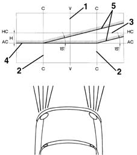
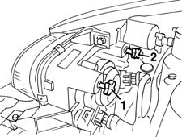
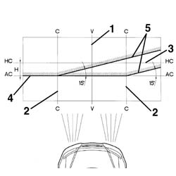
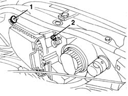

5540B39 DIPPED HEADLAMP LIGHT BEAM - ALIGN
- Path
- Procedures > 55 ELECTRICAL EQUIPMENT > 5540 EXTERIOR LIGHTING > 5540B HEADLAMPS > 5540B39 DIPPED HEADLAMP LIGHT BEAM - ALIGN
- Kind
- repair procedure (removal / refitting; the operation number is the code)
- Applies to
- all engines; all production periods
- Interactive page
- https://sloeber94.github.io/elrnDB-fMltpl/en/#/2891932
Applies to: all engines; production: fino a 05/99, da 09/03, da 06/99 a 03/02, da 04/02 a 08/03, fino a 05/04
Prepare the vehicle complete with spare wheel, tools, fluids, fuel reserve.
Check that the tyre inflation pressure is correct.
Set the headlamp alignment switch in position "0".
Position the vehicle on a flat surface, perpendicular to a screen or an opaque surface, 10 metres away, which contains the following lines.
1. V - V: vertical line corresponding to the trace of the plane of symmetry of the vehicle.
2. C - C: traces of the vertical planes passing through the reference centres of the light clusters.
3. HC - HC: horizontal line corresponding to the height from the ground of the reference centres for the light clusters.
4. AC - AC: horizontal line 13 cm below the HC - HC line.
5. Lines inclined at 15° as illustrated in the diagram.

Applies to: all engines; production: fino a 05/99, da 09/03, da 06/99 a 03/02, da 04/02 a 08/03, fino a 05/04
Switch on the dipped headlamps.
1. Vertical alignment.
Adjust the light cluster's vertical adjustment screw so that the horizontal section of the demarcation line between the area which is dark and the area which is lit up by the light beam coincides with the line AC - AC on the screen.
2. Horizontal alignment.
Adjust the light cluster's horizontal adjustment screw so that the point where the two horizontal and inclined demarcation lines intersect coincides with the point where lines C - C and AC - AC intersect on the screen.

Applies to: all engines; production: da 06/04
- Position the vehicle complete with spare wheel, tools, fluids, fuel reserve and with the driver on board.
- Check that the tyre inflation pressure is correct.
- Place the headlamp alignment control switch in position 0.
- Place the vehicle on a flat surface, perpendicular to a screen with an opaque surface 10 metres away on which the following lines are traced.
- V - V: vertical, corresponding to the trace of vehicle plane of symmetry.
- C - C: traces of vertical planes passing through the reference centres of the light clusters.
- HC - HC: horizontal corresponding to the height from the ground of the reference centres for the light clusters.
- AC - AC: horizontal below the line HC - HC.
- Lines inclined by 15° as illustrated in the diagram.

Applies to: all engines; production: da 06/04
- Switch on the dipped headlamps.
- Vertical alignment. Adjust the vertical adjustment screw for the light cluster so that the horizontal section of the demarcation line between the dark zone and the area lit up by the light band is aligned with the line AC - AC traced on the screen.
- Horizontal alignment. Adjust the horizontal adjustment screw for the light cluster so that the point where the two horizontal and inclined demarcation lines cross with the point where lines C - C and AC - AC cross on the screen are aligned.
